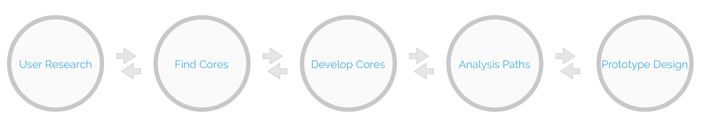
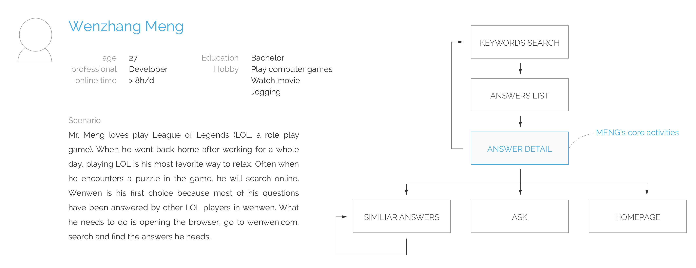
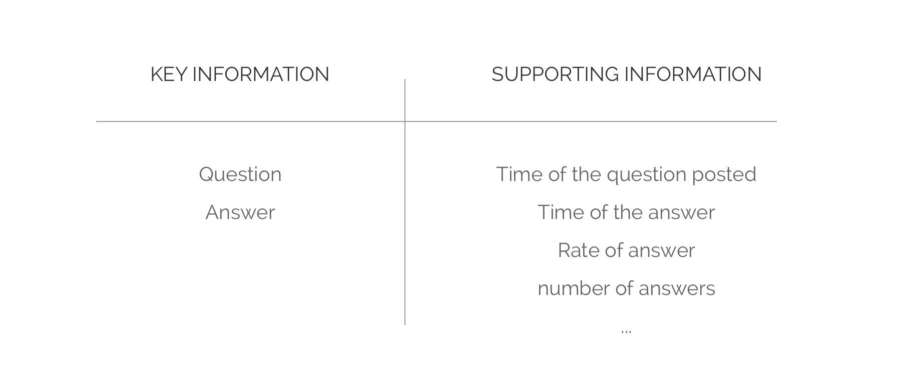
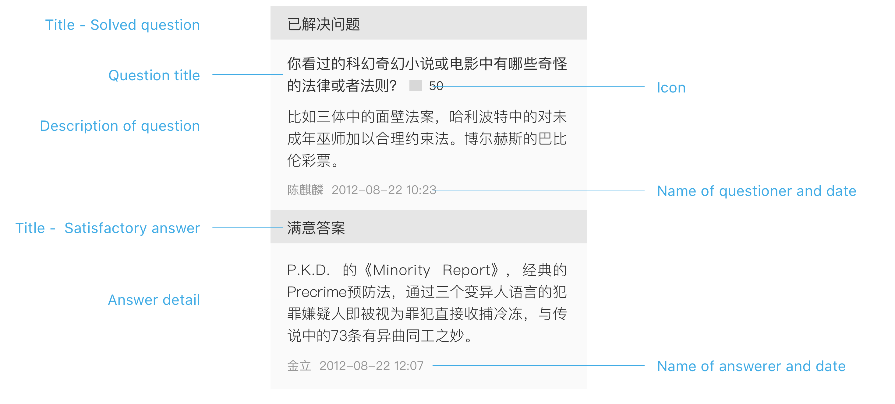
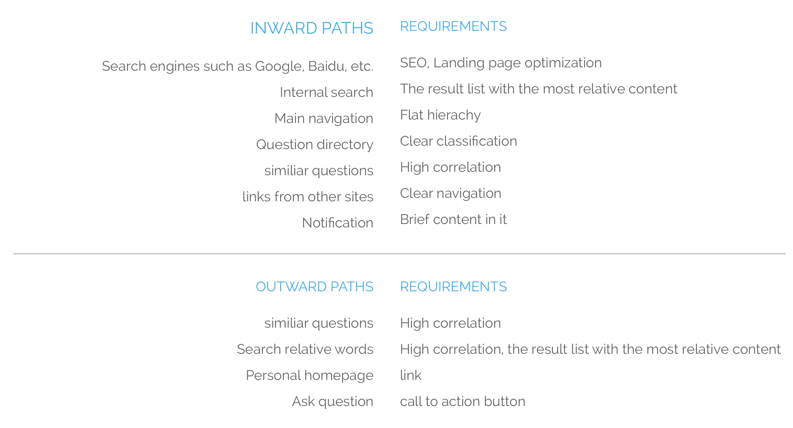
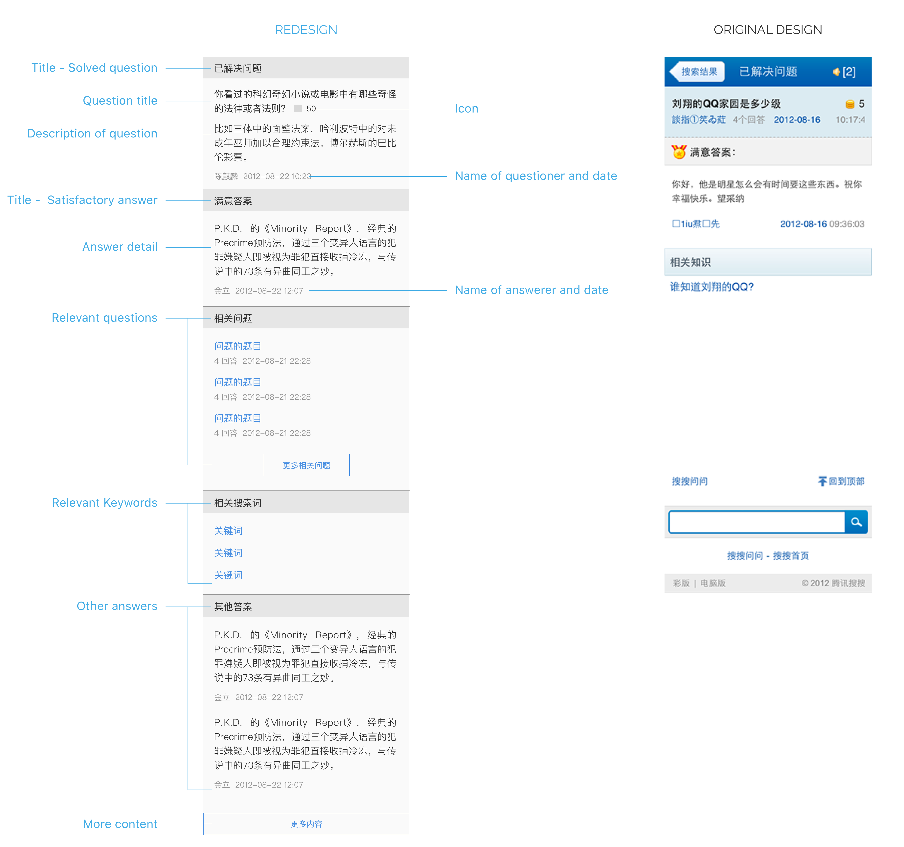

Previous - Blog
Next - Thermostat
WENWEN
A Chinese Qura, wenwen is one of the largest online Q&A communities in China.
BACKGROUND
WENWEN is a Chinese Quora. It has a desktop website version and a mobile version. The time when I took over Wenwen mobile version, it had no designers. All the interfaces were developed by the front-end engineers. So I got lots of work to do.
In this case, I demonstrated the process of redesigning the mobile site version.
CORES AND PATHS APPROACH
Instead of beginning to design from the homepage and global navigation, the Cores and Paths approach starts with defining the core, and then designs the paths that lead to the core.
The core is the reason users come to this site, the value that this website could provide to the users. The paths are the ways users come to and leave the core. There are two different types of paths. The inward path, the ways users get access to the core, and the outward path—the ways users left.
Typically in web design, the opposite approach is the rule: designers begin with designing the structure of a website and then the homepage, global navigation and other pages step by step. The problem is that sometimes the content which users ultimately want becomes the last thing that gets attention in the design process.
This approach provides me a new perspective to really think about what is the true value for our users, focus on that and design accordingly.
Speaking of this case, I found it very proper to use the Cores and Paths approach. Other than the design of a desktop website which designer usually has enough space to design for. Within the very limited area of mobile display, It is very critical to show the most important content directly to the users, keep everything simple, straightforward and a clear less hierarchy.
Below is the process of how I use this approach to redesign Wenwen mobile version.
First, with the help of user researches, we defined the cores. Then I started to design from one core page, identified the priorities of all the contents in this page. Next, I listed all the inward paths and outward paths, most of them are links. Finally, I put all of these contents and links together, got a new page design. By repeating this process and also use other methods, I finally had a new, friendly mobile website.
FIND THE CORES
By defining personals, understanding their typical usages, we got three cores – FIND ANSWER, ANSWERING QUESTION and BROWSING OUT OF INTERESTS.
Define Personal
The information we used to define persona comes from three ways.
1. Demographics Information
The Department of Data and Analysis(DDA) of our company provides us the demographics information of our users including the average age, gender ratio, education background, average time spending online and so on.
2. Preference of our site
According to feedbacks from online questionnaires and face to face interviews, we were able to better understand what our users like and dislike of our site, what they want most and the problems they encountered.
3. Using paths
The using paths of our site could be recorded by DDA. And we also got this information from user tests. Using these two sources, we got the typical using paths of our users.
All the information helped us to get six personals from which three cores were extracted. Here is one example.
DEVELOP THE CORES
We have decided on three cores according to our researches. I will take one as an example of how I developed it.
Core – Find Answer
Finding answer is a core activities of our users. The most important element of this core is the right answers which provided by other users. And also there are other supporting information like relevant answers, rates of the answers, relevant questions and so on. All the content serves one core, help the users to find answers.
MAKE PROTOTYPES
Having all the information, I started to design this page.
Inward and outward paths
In this step, I listed all the paths that users could reach and leave the core along with the requirements for each path.
These are to help us to improve the accessibility and provide value to business. For example, SEO and landing page optimization is necessary for visitors coming from Google and other search engines. A clear call to action button brings the user to answer questions in our site.
Put core and path content together
Put all the core content and paths together, get the new page design. From figure below you could see compared with original design, the new design is more organized and has more useful information to guide users find useful information.
More
Using the same methods, I redesigned the other core pages and also other pages.

Last thing
Keep iterating on and on. This is not a one time job. I have to follow up and keep working on this site to make it better.